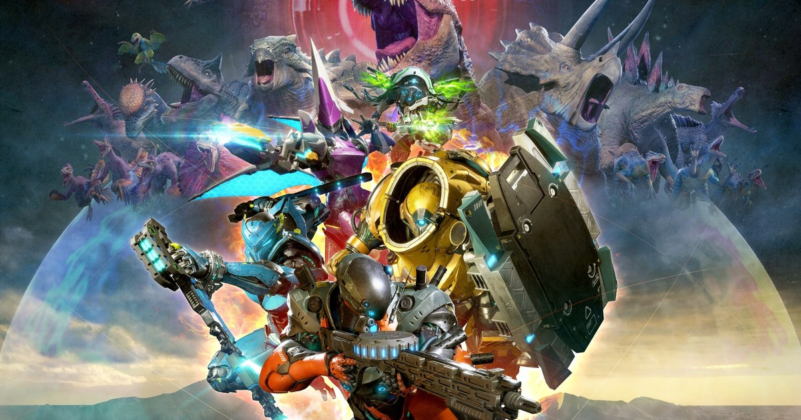

Capcom is shutting down Exoprimal — the dino shooter goes dark on September 29, 2027
Capcom announced the end of service for Exoprimal on November 24: the online-only dino shooter will be delisted in March and unplayable after September 29, 2027 — just over four years after launch.

Disclosure: this post contains affiliate links. I earn a commission on qualifying purchases.
Exoprimal is done. Capcom announced on November 24 that service for its dinosaur-vs-exosuit shooter will be discontinued on September 29, 2027 — and because the game is online-only, that date is not a sunset, it is a hard stop. Once the servers go dark, Exoprimal will not be playable on any platform, in any form.
"We cannot thank you enough for the love and support you have shown over the years, and we sincerely apologize for the gravity of this announcement," Capcom said in the statement posted to the game's official information site.
The shutdown schedule
Capcom laid out a three-step wind-down. The Survival Pass Premium Tiers for Seasons 1 through 4 stopped being sold on November 24, the same day as the announcement. The game itself, all of its DLC, and every other product will be pulled from digital stores on March 30, 2027. Then, on September 29, 2027 at 8:00 PM PDT, the service ends — and with it, the game.
There is one small mercy for owners: after the March delisting, anyone who already owns Exoprimal will still be able to re-download it until the end of service. But re-downloading a game you can no longer play is cold comfort, and Capcom is not pretending otherwise.
A short life, and a quiet ending
Exoprimal launched on July 14, 2023 for PlayStation 5, Xbox Series, PlayStation 4, Xbox One, and PC via Steam and Microsoft Store, priced at $59.99. The pitch was loud and weird in the best way: teams of players in powered exosuits fighting off literal dinosaur swarms pouring through portals in the sky. It was a Capcom original, not a sequel, and it arrived with real marketing muscle behind it.
But the game never found its footing. Capcom announced in July 2024 — barely a year after launch — that all planned seasonal content was finished and Exoprimal would receive no new updates. The servers stayed up and the four seasons kept cycling each month, but the game was effectively on life support for more than two years before Capcom finally pulled the plug.
That long, slow fade is what makes this one sting differently from a flop that dies fast. Exoprimal had its believers — a small, loyal player base that kept showing up for a game its own publisher had stopped feeding. They get ten more months with it, and then it is gone entirely. No offline mode, no private servers, no way to revisit it. When a live-service game dies, it does not go out of print. It ceases to exist.
The live-service graveyard keeps growing
Shacknews noted that Exoprimal is the second major live-service game to announce its closure in the past month — and the pattern is hard to miss. Games that were built to live forever keep dying young, and every shutdown is a reminder that the "games as a service" model has a second half nobody likes to talk about: the part where the service ends and the game you paid for disappears.
Capcom is at least giving players a long runway. Ten months' notice, a delisting date months ahead of the shutdown, and a clear schedule are more than most dying live-service games get. If you have been meaning to get back into Exoprimal, now is the time — there will not be a later.
Sources: End of Service Announcement (Capcom) · Exoprimal to end service on September 29, 2027 (Gematsu) · Exoprimal will no longer be playable after September 2027 (Shacknews) · Capcom to shut down its online dinosaur shooter Exoprimal next September (Automaton)
Gear up: Razer — mice, keyboards, headsets and laptops.